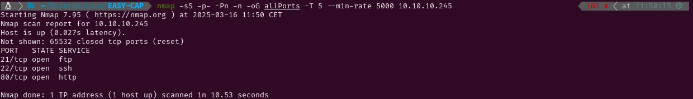

EASY - CAP
1. Recon
Nmap
nmap finds three open ports: FTP (21), SSH (22) and HTTP (80).

The NSE (Nmap Scripting Engine) finds the following information:
- The box is using Ubuntu.
- The version of the FTP service is vsftpd 3.0.3
- The version of the SSH service is OpenSSH 8.2p1
- The HTTP server is using Gunicorn
- The title of the website suggests it is a Security Dashboard

Website - TCP 80
Accessing the website, I see a security dashboard. The menu has three options. Two of them display the output of ifconfig (IP Config) and netstat (Network Status), while the other redirects to /data/5. This page contains some information about packets and a button that downloads an empty .cap file. Changing the number in /data/5, I find that different .cap files can be downloaded.


I run gobuster to find hidden files and directories but do not find anything beyond what I had already seen. However, I run it again to search for existing pages containing .cap files inside /data.


2. Gaining Access
The .cap file downloaded from /data/0 contains a username and password (nathan:Buck3tH4TF0RM3!) for the FTP service. I use them to log in and discover that I can explore the entire target system's file structure, but this does not yet allow me to execute commands on the target.


After spending some time checking the contents of the FTP server, I try using those credentials to log in via SSH, and it works, granting me access to the system.

3. Privilege Escalation
Root
While enumerating the system, I do not find any SUID binaries, passwords, sudo permissions, or anything that could potentially lead to privilege escalation. So, after manual enumeration, I run linPeas and discover that python3.8 has the cap_setuid capability. Using os.setuid(0), I change my UID to root (0) and spawn a shell with root permissions. Now, I can grab the flag and submit it.